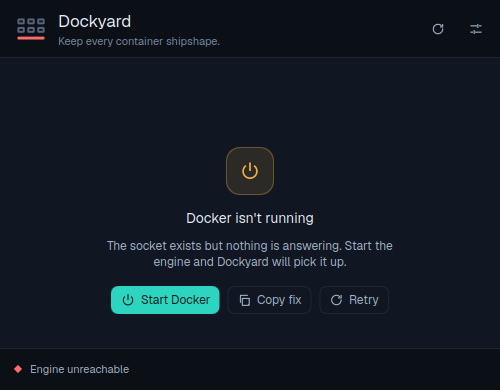

Docker y Podman, a punto en tu panel de KDE
Dockyard es un widget gratuito y de código abierto para Plasma 6 que muestra todos tus contenedores de un vistazo y te deja iniciar, detener, reiniciar, leer registros y limpiar sin salir del escritorio. Hecho para Fedora KDE.
Gratis · Licencia MIT · Sin telemetría · Docker, Docker rootless y Podman

Toda tu flota, dibujada como el manifiesto de carga de un barco
- En ejecución
- Requiere atención
- En pausa
- Detenido
Cada celda es un contenedor, coloreada según su estado. Las celdas mantienen su sitio cuando cambia un estado, así que un problema destaca sin que lo busques. Haz clic en una celda y la lista salta a ese contenedor. Cada estado tiene además su propia forma, para que se lea sin distinguir colores.
Entérate antes de que falle
CPU y memoria de todo lo que se ejecuta, con historial. Filtros de un clic: en ejecución, requieren atención y detenidos. Si un contenedor se cae, se vuelve no saludable o se reinicia en bucle, recibes una notificación de escritorio.
- Contenedores agrupados por proyecto de Compose
- Inicia, detén o reinicia un proyecto entero a la vez
- CPU, memoria y red en vivo por contenedor

Todo lo que sabe el motor
Imágenes, volúmenes y redes están a una pestaña, con etiquetas En uso y Sin usar. Elimina lo que no necesites; si algo sigue en uso, el motor lo rechaza y Dockyard te dice por qué. El panel de limpieza muestra qué elimina cada acción y cuánto libera antes de confirmar.
- Imágenes huérfanas y sin usar, volúmenes anónimos, caché de compilación
- La limpieza nunca toca los volúmenes con nombre
- Confirmación en dos pasos en lugar de diálogos modales

Con calma cuando algo falla
Docker detenido, sin permiso en el socket, sin motor instalado: Dockyard explica lo ocurrido en lenguaje claro y da la solución exacta, con un botón para copiarla o para iniciar Docker.
- Detecta Docker, Docker rootless y Podman automáticamente
- Abre los registros en vivo y con colores de cualquier contenedor
- Abre un shell en el contenedor con un clic


Habla tu idioma
Dockyard sigue el idioma de tu sistema, y el botón del globo en el popup te permite cambiarlo en cualquier momento. Añadir otro idioma lleva un archivo y nada de código.

Todo incluido
- Tira de manifiesto: toda la flota en una fila clicable
- Métricas de la flota: CPU y memoria con historial
- Compatible con Compose: agrupa, contrae y actúa sobre proyectos
- Registros en vivo: con colores, pausa y copia
- Acceso a shell: abre bash o sh en Konsole
- Puertos clicables: abre en el navegador o copia la dirección
- Imágenes, volúmenes, redes: etiquetas, filtros, borrado seguro
- Liberar espacio: medido y explicado antes de confirmar
- Notificaciones: caídas, comprobaciones de salud fallidas, bucles de reinicio
- Oscuro y claro: sigue el esquema de colores y la letra de Plasma
- Accesible: foco de teclado en todo y estado también por forma
- Varios idiomas: elígelo en el widget, fácil de ampliar
Instala en Fedora KDE en menos de un minuto
Comprueba lo básico
KDE Plasma 6, Python 3 (ya está en Fedora) y Docker o Podman. Nada más.
Instala el widget
Por usuario, sin necesitar root.
git clone https://github.com/phuonghx/dockyard cd dockyard && ./install.sh --restartAñádelo a tu panel
Clic derecho en el panel, elige Añadir widgets, busca Dockyard y arrástralo. Para probarlo antes, ejecuta plasmawindowed io.dockyard.widget.
¿No llega a Docker? Añádete al grupo docker y vuelve a iniciar sesión: sudo usermod -aG docker $USER. Con Podman: systemctl --user enable --now podman.socket.
Actualiza con git pull && ./install.sh. Desinstala con ./install.sh --uninstall.
Preguntas frecuentes
¿Qué es Dockyard?
Dockyard es un widget gratuito y de código abierto para KDE Plasma 6. Vive en tu panel y te permite vigilar y gestionar contenedores, imágenes, volúmenes y redes de Docker o Podman, leer registros y liberar espacio en disco, sin abrir una terminal ni una aplicación pesada.
¿Funciona con Podman?
Sí. Encuentra automáticamente Docker, Docker rootless y el socket compatible con Docker de Podman, o puedes indicar la ruta de un socket en los ajustes del widget.
¿Qué sistemas admite?
Cualquier escritorio Linux con KDE Plasma 6, probado en Fedora KDE. Es un widget de Plasma, así que no funciona en GNOME ni en otros escritorios.
¿Necesito Docker Desktop u otro software?
No. Solo Python 3 y un motor Docker o Podman en marcha. Dockyard habla directamente con el socket local del motor.
¿Es seguro? ¿Envía datos?
Dockyard no tiene telemetría y no envía nada salvo al socket local de tu motor. Tiene licencia MIT y el código está en GitHub. Como con cualquier herramienta de Docker, acceder al socket de Docker equivale a ser root.
¿Cómo obtengo permiso para usar Docker?
Añade tu usuario al grupo docker con sudo usermod -aG docker $USER y vuelve a iniciar sesión. Dockyard muestra este comando exacto cuando detecta el problema.
¿Puedo traducirlo a mi idioma?
Sí. Crea la plantilla con tools/i18n.sh new <idioma>, traduce el archivo con cualquier editor y abre un pull request. No hace falta programar. Consulta la guía Translating en CONTRIBUTING.md.
Libre y de código abierto
Dockyard tiene licencia MIT. Se agradecen incidencias, ideas, traducciones y pull requests.
Creado por
Xuan-Phuong Hoang, un desarrollador que quería que Docker en su panel de Fedora KDE se viera y se comportara como parte del sistema.